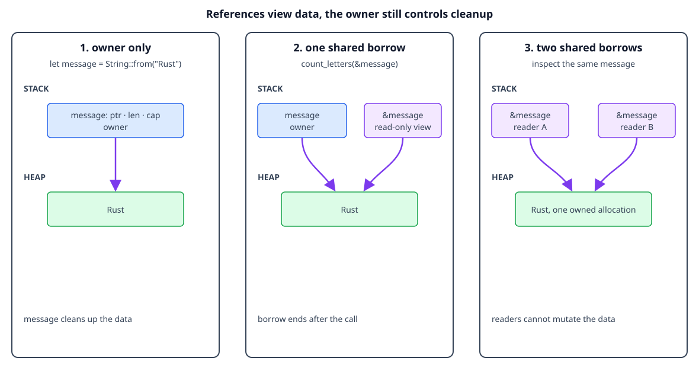

Shared borrowing
By the end, you will be able to
- Explain how a reference gives temporary access without transferring ownership.
- Use
&Tand&strfor read-only function parameters. - Use multiple shared references at the same time.
- Explain why Rust rejects a reference that could outlive its owner.
Borrow without becoming the owner
Ownership answers “who cleans this value up?” Borrowing answers “who may use it
right now?” A shared borrow, written &value, gives read-only access without
creating another owner. The original variable still owns the value:
fn count_letters(text: &str) -> usize {
text.len()
}
let message = String::from("Rust");
let count = count_letters(&message); // Borrow, do not move.
println!("{message} has {count} letters");
The function receives a reference to the string slice, not the String itself.
When the function returns, the borrow ends and message remains available to
its owner.

The diagram is conceptual. A reference is shown as a view into owned data, not as a second owner or a literal memory address.
Checkpoint 1
What does &message create?
Prefer &str for read-only text
The first version could accept &String, but &str is usually a more flexible
API. A String can be viewed as a string slice, and a string literal is already
a string slice:
fn count_letters(text: &str) -> usize {
text.len()
}
let owned = String::from("Rust");
let literal = "language";
println!("{}", count_letters(&owned));
println!("{}", count_letters(literal));
The function only needs to read text, so it asks for the smallest useful view instead of requiring one concrete owning type.
Checkpoint 2
Why is &str a good parameter for a read-only text function?
Multiple shared borrows
Because shared references cannot modify the value, Rust can safely allow more than one of them at the same time. This is useful when several functions need to inspect the same data:
fn first_character(text: &str) -> Option<char> {
text.chars().next()
}
fn text_length(text: &str) -> usize {
text.len()
}
let message = String::from("Rust");
let first = first_character(&message);
let length = text_length(&message);
println!("first: {first:?}, length: {length}");
Both calls borrow message; neither call becomes its owner. Shared borrows are
read-only, so they do not conflict with each other.
Checkpoint 3
Why can two functions share &message at the same time?
Reference lifetime and dangling prevention
A reference must never outlive the value it points to. Rust checks this before the program runs, so a function cannot return a reference to a local value that will be dropped when the function ends:
// This does not compile:
// fn invalid_reference() -> &String {
// let local = String::from("temporary");
// &local // `local` is dropped before the caller could use the reference.
// }
The safe design is to return ownership:
fn make_text() -> String {
String::from("owned result")
}
This is the usual choice when the function creates new data: the caller owns
the returned String and will clean it up.
Alternative 1: borrow from the caller
If the data already belongs to the caller, return a reference tied to that input. The caller keeps the ownership, and the returned reference cannot outlive the caller's value:
fn first_word(text: &str) -> &str {
text.split_whitespace().next().unwrap_or("")
}
let sentence = String::from("Rust is fast");
let word = first_word(&sentence);
println!("{word}"); // `sentence` still owns the characters.
The lifetime relationship is expressed by the function signature: the result is valid only while the borrowed input is valid.
Alternative 2: return data with a static lifetime
A string literal is stored in the program's binary and is available for the
whole program, so returning &'static str is safe:
fn course_name() -> &'static str {
"Rust ownership"
}
println!("{}", course_name());
This works for fixed data, not for a String created inside the function.
Adding 'static does not extend the lifetime of local variables.
Alternative 3: return an owned heap value
If the result must be heap-allocated but should have one clear owner, return an
owned value directly. Box<T> is useful when the value should be explicitly
owned behind a pointer:
fn boxed_text() -> Box<String> {
Box::new(String::from("owned on the heap"))
}
let text = boxed_text();
println!("{text}");
The caller owns the Box<String>, and Rust drops both the box and its String
when text leaves scope. In many ordinary cases, returning String is simpler
than returning Box<String>.
The compiler's rejection prevents a dangling reference from reaching runtime.
| Need | Prefer |
|---|---|
| Create new text for the caller | Return String |
| Inspect caller-owned text | Return &str tied to an input |
| Return fixed program text | Return &'static str |
| Explicit ownership behind a pointer | Return Box<String> |
Checkpoint 4
Why does invalid_reference fail to compile?
Complete runnable example
The lesson displays the same source file used by the matching demo:
fn count_letters(text: &str) -> usize {
// A shared borrow lets this function read without taking ownership.
text.len()
}
fn main() {
let message = String::from("Rust");
// `&message` creates a temporary shared reference to the String.
println!("{} has {} letters", message, count_letters(&message));
// Ownership stayed in `main`, so the owner can use the String again.
println!("The owner can still use: {message}");
}
Run it from the repository root:
rustc examples/02-ownership-and-borrowing/main.rs -o /tmp/rust-ownership
/tmp/rust-ownership
Expected output:
Rust has 4 letters
The owner can still use: Rust
Exercise
- Change
count_lettersto accept&String, then explain why the&strversion accepts more kinds of text. - Add a second shared-borrowing function that prints the first character.
- Uncomment
invalid_reference, compile it, and read the lifetime error.
Checkpoint 5
Which statement best summarizes shared borrowing?
Next
Continue with mutable borrowing to learn how
&mut T allows controlled changes through a reference.